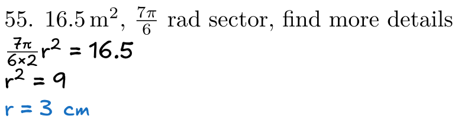

TeXIHI
Last Sunday, I decided to use real LaTeX for my homework. I spent more hours than I would like to admit on it, yet I'm very satisfied with the results.
Why so long? Why is this title "TeX I hate it"? Why didn't I just use a standard template and move on? Because I wanted to have clear question-answer separation in the dumbest way possible.
Here's what I remember of the process.
Getting to a starting point
I explained to Claude 3.5 Sonnet, my favorite LLM, what I wanted to do. Most of its suggestions didn't work in one way or another: the font (Excalifont) carried on past the answer section, or some math symbols didn't load, or numbers didn't use the font. However, I got to a starting point:
\documentclass{article}
\usepackage{fontspec}
\usepackage{unicode-math}
\newenvironment{answer}
{\begingroup
\setmainfont{Excalifont.ttf}
\setmathfont{Excalifont.ttf}
\setmathfont{Excalifont.ttf}[range=it]
}
{\endgroup}
\begin{document}
Math before answer: $x + y = z$
\begin{answer}
Math inside answer: $a + b = c$
\end{answer}
Math after answer: $x + y = z$
\end{document}
Asking for help
The problem with that code is that math following the
answer block is messed up. I formulated a question that
included a minimal demo and took to three places:
- The TeX Stack Exchange, a community of professional TeXers.
- Pvq, an experimental AI-powered forum
- Asking Claude many more times
The TeX community explained how I made numerous errors, including using
\setmainfont in a group, redundantly importing
unicode-math, and redundantly declaring a group. The guy
from TeX also showed how to do it the TeX way. While this helped clean
up my code, it didn't fix things.
Pvq more or less failed. The grader was a bit borked and none of the AIs were helpful.
However, when I gave my whole problem statement to Claude, after a bit
of refining it came up with something that worked. It included some
unnecessary stuff but the real change was only calling
\setmathfont once with a wider
range ({up,it,"0030-"007A,"002B,"00D7})
Scaling it up
While that worked, it didn't scale. It had to reload Excalifont every time, making it slow and eventually erroring due to too many fonts being loaded.
unicode-math has a solution for this, version.
Let's just load the font once with version, switch between
the versions, and everything will be okay! Right?
Unfortunately, version and range don't work
together. If you use them both at once, only range applies
(the last \mathfontset applies to all math). You can't just
drop range instead since it'll make
unicode-math try to use math Unicode for letters and the
Greek alphabet, which Excalifont doesn't have.
Messing around more
Since I had to find something that scaled, I tried a lot of random stuff
from there. I even tried one approach without unicode-math.
But eventually, I figured out that I can drop
range. I just have to:
-
Set
math-style=uprightwhen usingunicode-math -
Renew
\piand\thetato their non-italic Unicode equivalents (since step 1 doesn't fix them for some reason)
Minimal, fixed preamble
\documentclass{article}
\usepackage[math-style=upright]{unicode-math}
\newfontfamily\excalifont{Excalifont.ttf}
\setmathfont{latinmodern-math.otf}
\setmathfont{Excalifont.ttf}[version=ex]
\newenvironment{answer}
{\excalifont
\mathversion{ex}
\renewcommand{\pi}{π}
}
{}
My final preamble
\documentclass[preview,border=10pt,varwidth=4.25in]{standalone}
\usepackage[math-style=upright]{unicode-math}
\usepackage{color}
\newfontfamily\excalifont{Excalifont.ttf}
\setmathfont{latinmodern-math.otf}
\setmathfont{latinmodern-math.otf}[version=no]
\setmathfont{Excalifont.ttf}[version=ex]
\definecolor{blue}{RGB}{25, 113, 194}
\newenvironment{answer}
{
\excalifont
\mathversion{ex}
\renewcommand{\pi}{π}
\renewcommand{\theta}{θ}
}
{
\mathversion{no}
}
\newcommand{\important}[1]{
\fbox{\parbox{\dimexpr\textwidth-2\fboxsep-2\fboxrule\relax}{#1}}
}
\newcommand{\br}{\vspace{1em}}
\newcommand{\hl}[1]{\textcolor{blue}{#1}}
\newcommand{\degree}{°}